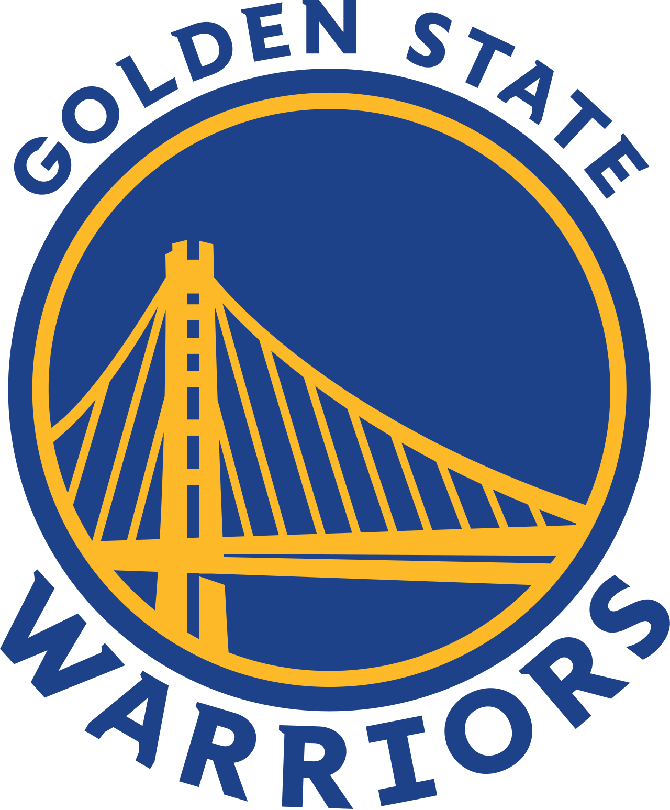

La National Basketball Association (NBA) est la principale ligue de basket-ball au monde. Créée le 6 juin 1946 sous le nom de BAA (Basketball Association of America), la ligue est renommée NBA en 1949 après sa fusion avec la NBL (National Basketball League)1. Elle est l'une des quatre ligues professionnelles majeures du sport américain, aux côtés de la NFL (football américain), de la MLB (baseball) et de la NHL (hockey sur glace). Le siège de la NBA est situé dans l'Olympic Tower au 645, de la 5e Avenue à New York. En 2015, les joueurs de la NBA sont les sportifs les mieux payés au monde.
Après des débuts dans l'après-guerre, la NBA voit sa popularité s'accroître dans les années 1960, marquées par la domination des Celtics et la rivalité entre Bill Russell et Wilt Chamberlain. Après un passage à vide dans les années 1970, la ligue se développe peu à peu hors des États-Unis à partir des années 1980 en accueillant des joueurs non-américains et en bénéficiant de la popularité de joueurs stars comme Larry Bird, Magic Johnson, et surtout Michael Jordan, considéré comme l'un des plus grands sportifs de tous les temps. La NBA est actuellement considérée comme le championnat de basket-ball le plus prestigieux au monde en termes de niveau de jeu, d'affluences et d'audiences, disposant même de sa propre chaîne de télévision (NBA TV). Elle a également créé deux ligues affiliées : la WNBA (basket-ball féminin) et la NBA G League (ligue mineure).
L'histoire de la NBA
La National Basketball League, fondée en 1898 et dissoute en 1904, est le précurseur des nombreuses ligues professionnelles créées aux États-Unis et dans le reste du monde tout au long du siècle. Hormis la Eastern Basket Ball League, fondée en 1909, les principales ligues professionnelles sont créées au début des années 1920 : la Metropolitan Basketball League (1921) et l'American Basketball League (1925).
La Basketball Association of America (BAA) est fondée le 6 juin 1946 à l'hôtel Commodore, à New York par les propriétaires des arènes de sport du Nord-Est et du Midwest des États-Unis. Maurice Podoloff est nommé président. Le premier match disputé en BAA oppose le 1er novembre 1946 les Huskies de Toronto aux Knicks de New York. La ligue était interdite aux Afro-Américains à sa création. Cette interdiction est levée en 1950.
Quelques équipes de la NBA
Warriors de Golden State
Lakers de Los Angeles
Celtics de Boston
Nets de Brooklyn
Grizzlies de Memphis

Sélectionner une équipe pour obtenir ses informations: